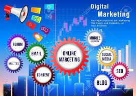

The world today seems to run on apps. If it is something that people can interact with, then it’s likely that there is an app available for it. Well designed apps are eye-catching and make you want to use them, whilst poorly designed ones are just frustrating and don’t do what we want them to. While some basics such as usability, functionality and layout help the user experience, one of the most complained about issues with apps are the features, be it lack of expected ones or bad use of those which are there.
Simplicity
Security
Speed
Good image resolution
Web Design
Start from $199
According to Ecommerce Foundation’s country report, 88% of consumers will research product information before making a purchase online or in-store. This means that there is no greater time to have an online presence for your business but now.
Things that can make it successful:
User-Friendly
Cross Browser Compatibility
Clear and Effective CTAs
Mobile-Responsive
Considering how web development is experiencing continuous growth with technological advancement, following web development trends is essential to sustain the audience’s volatile attention. Aspects like architecture, application, chatbots, motion UI, and IoT are popularly incorporated into service structures with API project ideas for beginners, demanding significant experience to master and create complying websites and applications
Practicing web development projects with code bridges the gap between theoretical knowledge and practical application, and the best way to grasp web development concepts is by working on real-world projects. Web development projects for final-year students or fresh graduates and API project ideas for beginners help them test their theoretical knowledge and enhance their practical skills.
Digital Marketing

Start from $199
The digital era that we are in today has empowered the world with the rapid and widespread dissemination of brand news, thus offering conscious buying. Such changes to a brand's business environment happen more frequently and have a bigger impact. SMEs must reconsider their digital marketing tactics in light of changes in customer behavior. This post is for you if you believe your SME is not taking advantage of all the potential provided by digital marketing. We will walk you through each of the best features of digital marketing to take your digital marketing to the next level.
The best Features of Digital Marketing
Improve product visibility
Reach new customers
Sell your products with efficiency
Targeted Audience Identification
Advancement
¼ Technology-Supportive
All the above features make it clear that digital marketing can bring profitable business to you to a large extent. Thus, immediately hire a DM analyst to work for you and to reach your customers extensively. It is an important tool that helps you to achieve your goal and run a successful business.